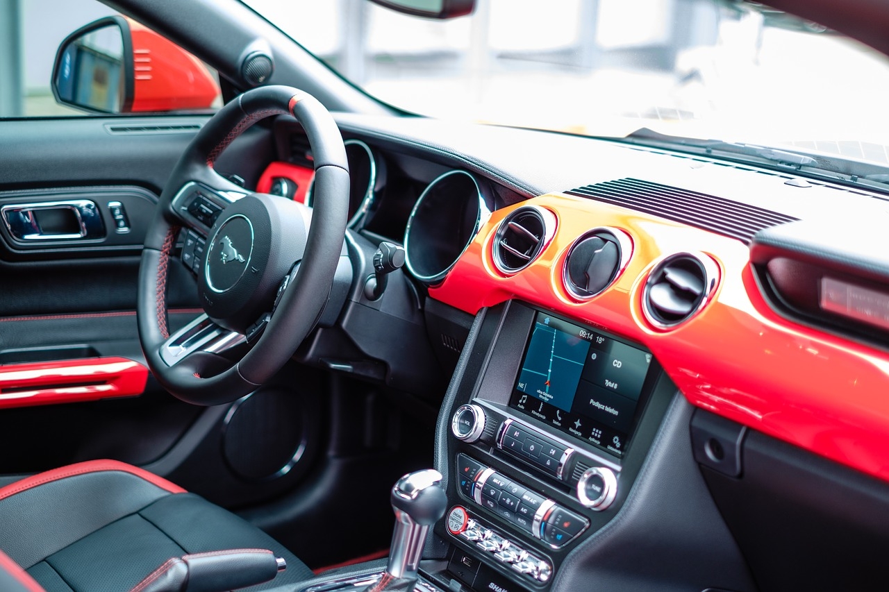

Find the right angle
Angle from which you are shooting is important and in automotive photography it has a key role because any automobile has some features at each side and you cannot cover all the sides in one frame, So you must find angle from where you most attractive look of automobile.

Don't cut off
Just a quick and simple tip. If you’re trying to take a picture of the whole car, make sure you actually take a full picture of the car, and don’t cut off the bumpers, wheels, spoilers, etc. It makes sense to cut off sections if you just want to single one or two things out (such as close-ups of individual parts in an engine bay), but if you want to get everything, pay attention not to cut off parts of your subject.